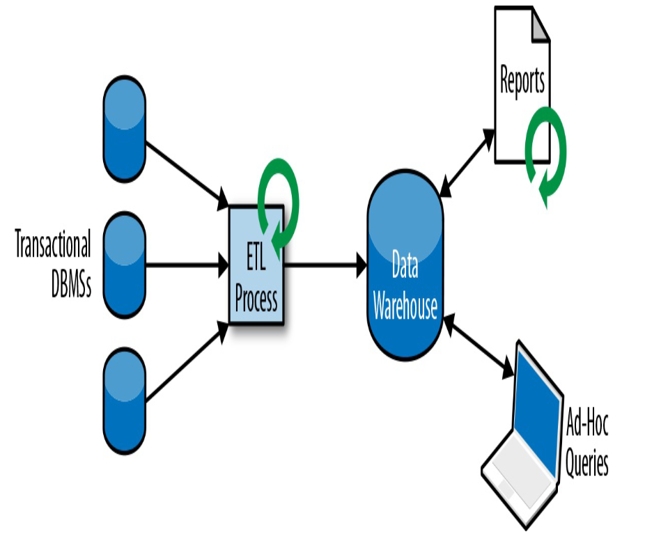

Was ist Flink?
Was ist Flink?
"Apache Flink is an open-source, unified stream-processing and batch-processing framework developed by the Apache Software Foundation."
(aus Wikipedia https://en.wikipedia.org/wiki/Apache_Flink)
"Apache Flink is a framework and distributed processing engine for stateful computations over unbounded and bounded data streams.
Flink has been designed to run in all common cluster environments, perform computations at in-memory speed and at any scale."
(aus der Flink-Dokumentation https://nightlies.apache.org/flink/flink-docs-release-1.17/)
Streamverarbeitung Motivation
Wozu Datenstreaming?
Ausgangspunkt: Traditionelle Batch-Datenverarbeitung
| 
(Bildquelle: "Stream Processing with Apache Flink" (F. Hueske, V. Kalavri), 1. Ed., 2019) |
Ansatz Streaming
Daten werden als eine kontinuierliche Folge (Stream) von Ereignissen modelliert
Daten können über Pipelines in Echtzeit transportiert, transformiert und verarbeitet werden
→ Ergebnisse mit sehr geringer Verzögerung
erfordert komplexere Systeme
Herausforderungen im Bereich der Organisation und Kommunikation der einzelnen Prozesse
Zustandshaltung wird teilweise in die Anwendungen verlegt
Ziele wie Konsistenz, Performance und Verfügbarkeit sollten möglichst erreicht werden
→ Notwendigkeit für spezialisierte Frameworks wie Flink und Kafka
Stateful Stream Processing
Streaming-Anwendungen können stateless (zustandslos) oder stateful (zustandsbehaftet) sein
Stateless Anwendungen verarbeiten Datensätze unabhängig voneinander
Stateful Anwendungen können Datensätze in Abhängigkeit voneinander verarbeiten
Für komplexere Aufgaben wird State (Zustand) benötigt
3 Use Cases für den Streaming-Ansatz
Event-driven Application
Data Pipelines
Data Analytics
Use Case: Event-driven Application
Events lösen Berechnungen, Zustandsupdates oder externe Aktionen aus
geeignet auch für Microservice-Architektur
Beispiele: Real-time Empfehlungen, regelbasiertes Alerting, Fraud Detection
Use Case: Data Pipelines

Transformation von Daten
Anreicherung von Daten
Verarbeitung von vielen Daten in kurzer Zeit
Beispiele: Datensynchronisierung, einfaches Monitoring, Search Index Building (E-Commerce)
Use Case: Data Analytics

Extraktion von Information aus Rohdaten
Kontinuierliche Datenanalyse
Beispiele: Analyse von Nutzerverhalten, Quality Monitoring
Flink Eckdaten
Flink
Ursprung im deutschen Forschungsprojekt 'Stratosphere: Information Management on the Cloud' (2011)
seit 2014 Apache Projekt
Open-Source, betrieben durch die Apache Flink Community
entwickelt in Java und Scala
Anwendungen für Flink können in Java, Scala, Python und SQL entwickelt werden
findet heute zahlreiche Verwendung v.a. in Cloud-Anwendungen
für Beispiele siehe https://flink.apache.org/powered-by/
Flink..
..beschränkt sich auf die Verarbeitung von Daten
Für Sourcing, Transfer und Persistierung sind weitere Lösungen erforderlich (z.B. Apache Kafka; S3)
..nutzt parallelisierte, stateful Streamverarbeitung
..wird in der Form eines dedicated Clusters betrieben
..ist daher besonders für Anwendungsfälle mit aufwändigen oder komplexen Datenverarbeitungsschritten geeignet
für eine einfache Microservice-Architektur ist Apache Kafka ausreichend
Aufgabe 0: Lokaler Flink Cluster Setup (1)
Laden Sie sich Flink auf https://flink.apache.org/downloads/ in der aktuellen Version herunter
Extrahieren Sie das Archiv in einen Ordner
Starten Sie den Flink-Cluster (standalone), indem Sie im erstellten Ordner ./bin/start-cluster.sh ausführen
Überprüfen Sie, dass der Cluster läuft, indem Sie im Browser die URL http://localhost:8081 aufrufen
Machen Sie sich etwas mit der angezeigten Web UI vertraut
Sehen Sie nach, ob es bereits einen Task Manager gibt
Starten Sie einen neuen Task Manager mit ./bin/taskmanager.sh start
Verifizieren Sie, dass in der Web UI jetzt ein (weiterer) Task Manager erscheint
Aufgabe 0: Lokaler Flink Cluster Setup (2)
Im Verzeichnis aufgaben/aufgabe-00 der Schulung (Git Repository) finden Sie eine demo-job.jar
Kopieren Sie diese in Ihr Flink-Verzeichnis
Lassen Sie die JAR auf dem Flink-Cluster als Job laufen, indem Sie folgenden Befehl ausführen:
./bin/flink run demo-job.jar
Ignorieren Sie etwaige Warnungen in der Konsole mit "illegal reflective access"; diese sind harmlos
Überprüfen Sie in der Konsolenausgabe und in der Web UI, dass der Job erfolgreich läuft
Überprüfen Sie, dass Flink im "log"-Verzeichnis in einer .out Datei mit dem Wort "taskexecutor" im Namen Ausgaben der folgenden Art generiert hat:
Abhebung{automat_id=45678, person_name='Lisa C.', betrag_abgehoben=50}
(Optional) Stoppen Sie den Job und starten Sie ihn erneut über die Web UI
Grundlagen Stream-Processing
Grundlagen Stream-Processing
Latenz und Throughput
Um über die Performance von Anwendungen zu sprechen, betrachten wir 2 Metriken:
Latenz (latency) ist die Zeitverzögerung, die zwischen Input eines Datensatzes und Output des auf diesem Datensatz basierenden Resultats entsteht
Beispiel im Café: Wie lange muss ein Kunde auf seine Bestellung warten?
Throughput ist die Anzahl der Input-Datensätze, die in einer gegebenen Zeit (z.B. 1 Sekunde) vollständig verarbeitet wurden
Beispiel im Café: Wie viele Bestellungen wurden innerhalb eines Tages erfolgreich abgewickelt?
Event Time und Processing Time
Daten sind oft mit einem Zeitpunkt assoziiert
processing time: Zeit der Verarbeitung durch den jeweiligen Prozess
event time: Zeit der ursprünglichen Generierung der Daten
muss dem Datensatz als zusätzliche Information angeheftet werden.
Nutzung von processing time ist einfacher zu konfigurieren und führt zu schnellerer Verarbeitung, da Prozesse nicht auf out-of-order Ereignisse warten müssen
event time ist genauer und wird benötigt, wenn
die Zeit der Erstellung relevant für die Verarbeitung ist und
die Zeit der Erstellung nicht genau genug mit der Zeit der Verarbeitung übereinstimmt
Event Time und Processing Time : Beispiel
Eine Wetterstation schickt minütlich ihre Messdaten an einen Flink-Cluster
Aufgrund von einer Störung treffen die Daten von 8:25 und 8:26 verzögert ein
→ Processing Time ist nicht durch Event Time determiniert
Operators und Operator State
Eine Streaming-Anwendungen besteht aus mit einander verbundenen Operators
Einzelne Operators können stateless oder stateful sein
Beispiele für stateless Operators:
Konvertierung zwischen Datenformaten
Filterung
Beispiele für stateful Operators:
Aggregierung von Informationen innerhalb eines Zeitraums
Berechnung von statistischen Metriken
Arten von Operators
Quelle : beschafft Input der Anwendung
Senke : erzeugt Output der Anwendung
Transformation : Synonym für stateless Operator
Rolling Aggregation :
stateful, State ist ein einzelner Wert
ankommende Datensätze updaten diesen Wert
der neue Wert wird jeweils als Output emittiert
Zustandsupdate hängt nicht von der Reihenfolge der Datensätze ab
Beispiel : Zählen, Summieren von Werten
Window Operator
Window Operators
stateful
arbeiten mit Windows (Zeitfenstern)
für jedes Window exisitiert in separater Zustand
dies ermöglicht es, auch auf unbeschränkten Streams Operationen zu verwenden, die sonst nur auf beschränkten Streams Sinn ergeben
z.B. Median von Zahlen bilden
konkretes Beispiel : Anzahl der Loginversuche nach User über einen Zeitraum von 2 Minuten bestimmen
Arten von Windows
Zeitbasierte Windows:
Tumbling Windows
nicht überlappende Windows einer festgelegten zeitlichen Länge
Sliding Windows
überlappende Windows einer festgelegten zeitlichen Länge
Datenbasierte Windows :
Counting Windows
nicht überlappende Windows, die je eine festgelegte Anzahl von Datensätzen enthalten
Session Windows
nicht überlappende Fenster, deren Start und Länge dynamisch nach Aktivität des Streams festgelegt werden
Zeitbasierte Windows
Datenbasierte Windows
Watermarks (Motivation)
Probleme bei zeitbasierten Window Operators in Kombination mit event time:
Reihenfolge der Datensätze im Stream muss nicht Reihenfolge der event times entsprechen
Es kann immer Datensätze geben, die verspätet erscheinen
Frage: Wann sollte ein Window Operator ein zeitbasiertes Window für die weitere Bearbeitung schließen und die Ergebnisse weitergeben?
In Flink wird wird hierfür ein Mechanismus namens Watermarks verwendet
Watermarks
Watermarks sind spezielle Datensätze, die einen Timestamp und keine Daten enthalten und zwischen die regulären Datensätze eines Streams gemischt werden
Ein Watermark entspricht der Information, dass ab dieser Stelle im Stream keine weiteren Datensätze mit einer Eventzeit zu erwarten sind, die früher als die im Watermark angegebene ist
Windowed Operators schließen ein Window, wenn sie dem ersten Watermark begegnen, das später als der späteste Zeitpunkt im Window ist
Die Art des Umgangs mit zu späten Datensätzen enthält einen Trade-Off zwischen Latenz und Vollständigkeit
Watermarks (Beispiel)
Beispiel: Bestimmen einer Durchschnittstemperatur im Window
Tolerierte Verspätung : 3 Minuten
Window schließt nach Erhalt einer Watermark mit Zeit 13:00 oder später
Diese folgt auf (manche) Datensätze mit Zeit 13:03 oder später
Herausforderung von Statefulness
State Management
Effiziente und sichere Verwaltung von State durch das System
State Partitioning
Wenn ein Operator parallelisiert wird, muss sein State partitioniert (aufgeteilt) oder repliziert werden
State Recovery
Im Fehlerfall sollte der State wiederhergestellt werden können
→ Regelmäßige sichere Persistierung des States ("Checkpointing")
Konsistenz
Die Ausführung einer Anwendung kann auf verschiedene Weisen fehlschlagen
→ State der Anwendung kann inkonsistent mit den Inputdaten werden
→ Output der Anwendung wird verfälscht
Wir möchten einen Recovery-Mechanismus, der im Fehlerfall den State auf einen konsistenten Zustand zurückversetzt
Es sollte eine Garantie geben, dass sich der Output auch im Fehlerfall nicht oder zumindest nur in einer bekannten, beschränkten Weise, ändert
→ Konsistenzgarantien
Konsistenzgarantien
Was passiert bei einem Fehler?
At least once
Mindestens ein Mal : Risiko von Duplikaten
At most once
Maximal ein Mal: Kein Neuversuch beim Fehlschlag
Exactly once
Genau ein Mal: In Praxis schwer zu erreichen
End-to-end exactly once
Genau einmal unter Einbeziehung aller Systeme: Erfordert zusätzliche Abstimmung von Systemen, die alle exactly once unterstützen
At Least Once Beispiel: Print Server
Situation: Druckfehler / Toner leer: Ausdruck zu hell!
Fehler wird behoben
Alle Seiten in der Warteschlange werden gedruckt
… sehr viel Papier
At Most Once Beispiel: Print Server
Situation: Druckfehler / Toner leer: Ausdruck zu hell!
Fehler wird behoben
Keine Seite in der Warteschlange wird gedruckt
… hin und her laufen.
Exactly Once Beispiel: Print Server
Situation: Druckfehler / Toner leer: Ausdruck zu hell!
Fehler wird behoben
Genau die zu hellen Seiten werden gedruckt
Perfekt :)
Exactly Once Beispiel: Print Server
Woher weiß der Drucker, welche Seiten zu hell sind?
Idee: Seitennummer am Bedienfeld eingeben
Im Allgemeinen: schwer umsetzbar
Datenflussgraphen
Jede Streaminganwendung enthält einen oder mehrere Jobs, die auf logischer Ebene durch einen Datenflussgraphen (JobGraph) beschrieben werden
Die Knoten sind die Operatoren der Anwendung
gerichtete Kanten zwischen den Knoten beschreiben die Abfolge von Verarbeitungsschritten
Wenn es eine Kante von Knoten A zu Knoten B gibt, leitet Knoten A seinen Outputstream an Knoten B als Inputstream weiter
Daten fließen von Quellen über verarbeitende Operatoren zu Senken
Parallele Verarbeitung
Ein Job kann auf unterschiedliche Weisen parallelisiert werden:
Datenparallelität
Einzelne Operatoren können ihre ankommenden Daten parallel verarbeiten
Parallelismus des Operators = Anzahl der parallelen Instanzen
Taskparallelität
verschiedene Operatoren können parallel arbeiten
Datensätze werden mit Keys versehen und nach Gruppen von Keys partitioniert den parallelen Instanzen eines Operators zugeordnet
Bestimmte Operationen erfordern ein Neuzuordnen von Keys (rebalance)
Task
kleinste ausführbare Einheit in einem Job
wird von einem einzelnen Thread ausgeführt
jede parallele Instanz eines Operators in einem Job wird genau einem Task zugeordnet
Verkettung von Operatoren:
ein Task kann auch mehrere verkettete Operatorinstanzen als Subtasks hintereinander ausführen
Die Verkettung ist eher technisch begründet (Performance), als inhaltlich
ExecutionGraph
Ein JobGraph ist ein logischer Graph
Um einen Job auszuführen, muss aus dem JobGraph ein physicher Graph (ExecutionGraph) erstellt werden
Dies ist eine parallelisierte Form des JobGraphs, bei dem die Knoten physische Tasks sind
Die Knoten enthalten je eine oder mehrere verkettete Operatorinstanzen von Operatoren im JobGraph
Die Tasks können dann basierend auf dem ExecutionGraph vom Framework organisiert auf der Hardware ausgeführt werden
JobGraph (Beispiel)
ExecutionGraph (Beispiel)
Quelle und Verarbeitung haben einen Parallelismus von 2, Senke von 1
Nach Filterung werden Datensätze repartitioniert
Datentransferstrategien
Jeder Task muss seinen Output an die Tasks schicken, zu denen im ExecutionGraph direkt eine Kante führt
Kanten im JobGraph können auf unterschiedliche Arten in Kanten im ExecutionGraph übersetzt werden und Daten für den Transfer nach unterschiedlichen Strategien aufgeteilt werden:
Forward Strategy
Broadcast Strategy
Key-Based Strategy
Random Strategy
Datentransferstrategien (2)
Gegeben sei jeweils eine Kante zwischen Operatoren im JobGraph
Wir nehmen vereinfacht an, dass es keine Verkettung von Subtasks gibt
Somit werden aus jedem Operator A im JobGraph n Knoten A#1, A#2, .., A#n im ExecutionGraph, wobei n die Parallelität von A ist
Datentransfer: Forward Strategy
Jeder Knoten im ExecutionGraph, der zu A gehört, erhält genau eine Kante zu einem Knoten im ExecutionGraph, der zu B gehört
Alle vom ersten Knoten generierten Daten werden zum zweiten Knoten geschickt
Hierfür sollten A und B möglichst die gleiche Parallelität haben
Datentransfer: Broadcast Strategy
Jeder Knoten im ExecutionGraph, der zu A gehört, erhält Kanten zu jedem Knoten im ExecutionGraph, der zu B gehört
Alle vom ersten Knoten generierten Daten werden zu allen damit verbundenen Knoten geschickt
Nachteil: teuer, insbesondere kann dies zu erhöhtem Netzwerk Traffic führen
Datentransfer: Key-based Strategy
Kanten wie bei broadcast
jeder Datensatz wird nur zu einem der verbundenen Knoten geschickt
jeder Datensatz hat einen deterministisch bestimmten Key, der entscheidet, zu welchem Knoten er geschickt wird
Datentransfer: Random Strategy
Kanten wie bei broadcast
wie bei key-based werden Daten aufgeteilt
die Aufteilung geschieht aber zufällig
Features von Flink
starke Unterstützung für Event Time Processing
Exactly-Once Konsistenzgarantien
Latenzen im Millisekundenbereich bei einem Throughput von Millionen von Daten pro Sekunde
Skalierbarkeit auf tausende Prozessorkerne
Geschichtete APIs (Flexibilität oder Einfache Benutzbarkeit)
Kann mit allen verbreiteten Speichersystemen arbeiten
High-Availability Betrieb mit sehr geringen Downtimes möglich
Updates und Migrationen ohne Verlust von State
Zahlreiche eingebaute Metriken, selbst definierbare Metriken
Auch für Batch-Processing einsetzbar
Aufgabe 1
In einem System zur Betrugserkennung sollen verdächtige Abhebungen an Geldautomaten erkannt und unterbunden werden.
Falls innerhalb einer kurzen Zeit (10 Minuten) eine Abhebung an 2 Automaten erfolgt, die mehr als 100km auseinander liegen, liegt ein Betrugsfall vor.
Zeichnen Sie einen logischen Datenflussgraphen
Zeichnen Sie ein physisches Äquivalent
Aus Performancegründen gibt es 3 parallele Verarbeitungsstränge.
Nach welcher Zeit werden Überweisungen gruppiert? Welche Art von Fenster wird verwendet?
Welche Resultgarantie wird benötigt?